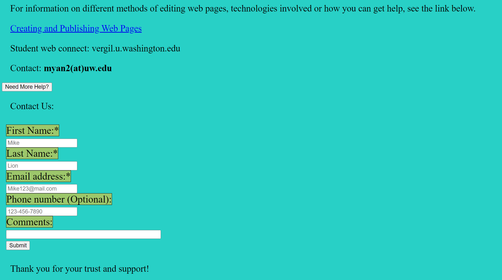
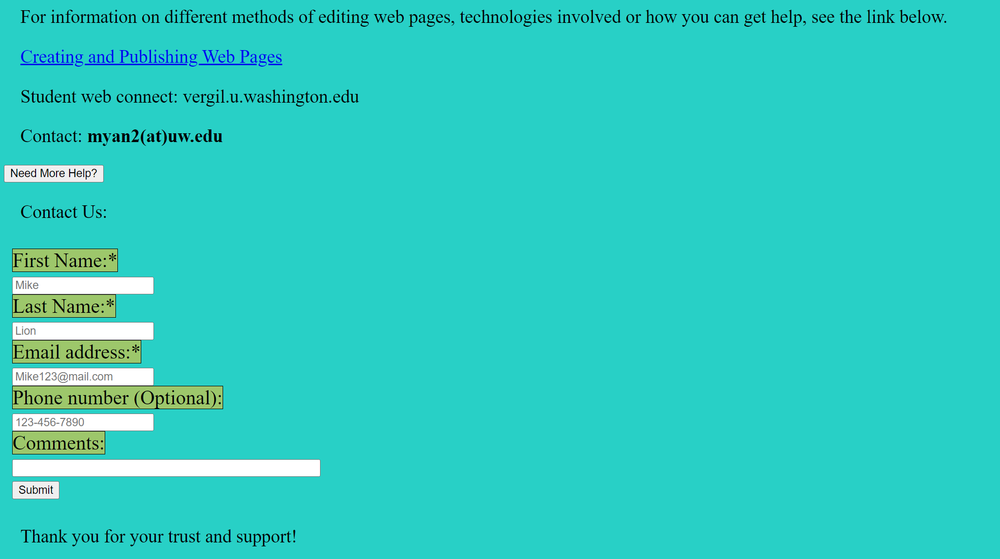

This is my first time to create a web page using HTML. I tried a lot of knowledge I learned on these pages, including background color change, tables, animations, and many other things. Because of the existence of this experimental website, then I can better apply these knowledge to create the current website.
Independent Development:
Created a website using programming languages such as HTML, CSS, and JavaScript, featuring 10 pages, each with unique functions and designs.
Dynamic Features:
Implemented features such as uploading contact forms, opening documents, downloading information, and dynamic theme switching (e.g., background color changes).
Creative Problem Solving:
Addressed common web development challenges, enhancing user experience and ensuring cross-browser compatibility.